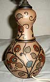
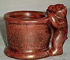
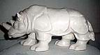
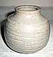

An Introduction to Danish Ceramics and Potters
II
L.Hjorts Terracotta Factory, Roenne, Bornholm
(a small island in the Baltic Sea)

The
potter Lautitz Adolph Hjorth (1831-1912) started out making water-coolers,
flowerpots and milk-jugs. From 1862 he solely made vases and figurines
in terracotta. Those models of antique and old Norse vases were
the latest fashion at the time, and his products were sold worldwide.
Hjorths Terracotta was abundantly represented at the World Exhibitions.
Around 1900 the Jugendstyle made it's entry at Hjorth's, represented
mainly by a black burned terracotta. Production was strongly inspired
by Danish sculptor Bertel Thorvaldsen whose statuettes were manufactered
at the factory.
Lauritz
Hjorth two sons, Peter Christian Hjorth (1873-1959) and Hans Adolph
Hjorth (1878-1966) took over the production in 1912. Hans Hjorth
produced the factory's first stoneware in 1902 and received several
international distinctions, notably 1910, 1913 & 1915 (San Francisco)
and 1929 (Barcelona) for his outstanding production. From 1913-1940
much of the stoneware was decorated by his Thora Margrethe Hjorth
(1875-1970).


In the past several artists were connected to the factory:
- Holger Drachmann (painter and poet 1846-1908)
- Kristian Zahrtmann (painter 1888-1968)
- Gertrud Kudielka (1896-1984)
- Adam Fischer (1888-1968)
- Lisbeth Munch-Petersen (daughter of Hans Hjorth 1909-97)
- Ursula Munch-Petersen (grand daughter 1937-)
- Jane Reumert (1942-)
- Ulla Gahrn (1937-) and maney others
The factory closed in 1993, but reopened in 1995 as a working museum.
Part 1 > Jens
Michael Andersen
Part 2 > L.Hjorts Terracotta Factory, Roenne, Bornholm
Part 3 > Soeholm, Roenne on
Bornholm
Part 4 > P. Ipsens Enke, Copenhagen
Part 5 > Kongstrands Pottery,
Esberg
Part 6 > Potteries
and Potters around Horsens
Part 7 > - The Turn
of the Century
Article kindly supplied by Tove Jespersen Klitgaarden
Antique & Ceramics, Denmark. www.Klitgaarden.net
e-mail: Klitgaarden@tdcadsl.dk
More Articles
|

{kind=link}
{kind=link}
{kind=link}
{kind=link}